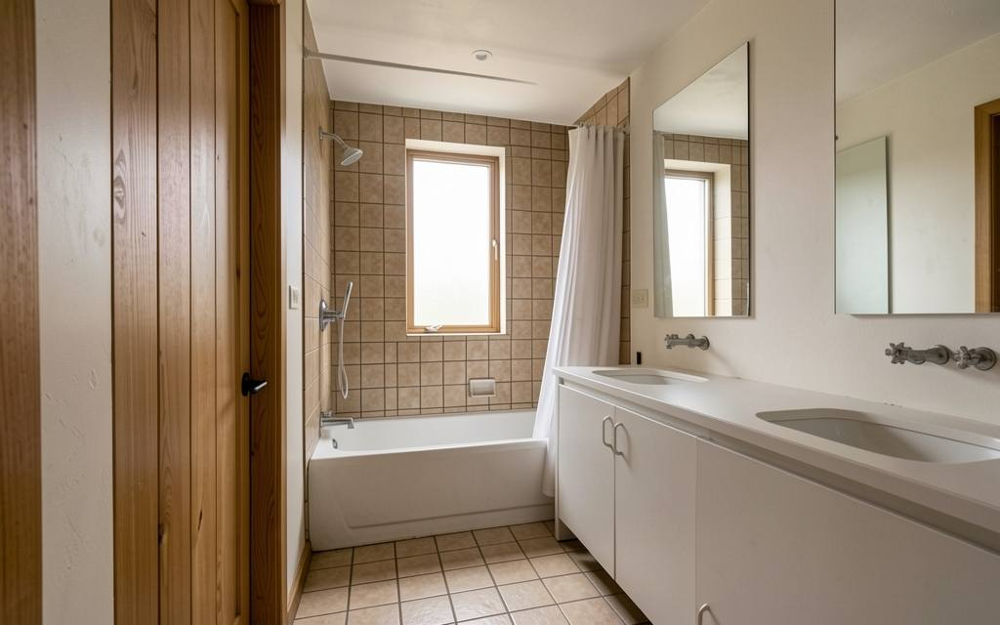
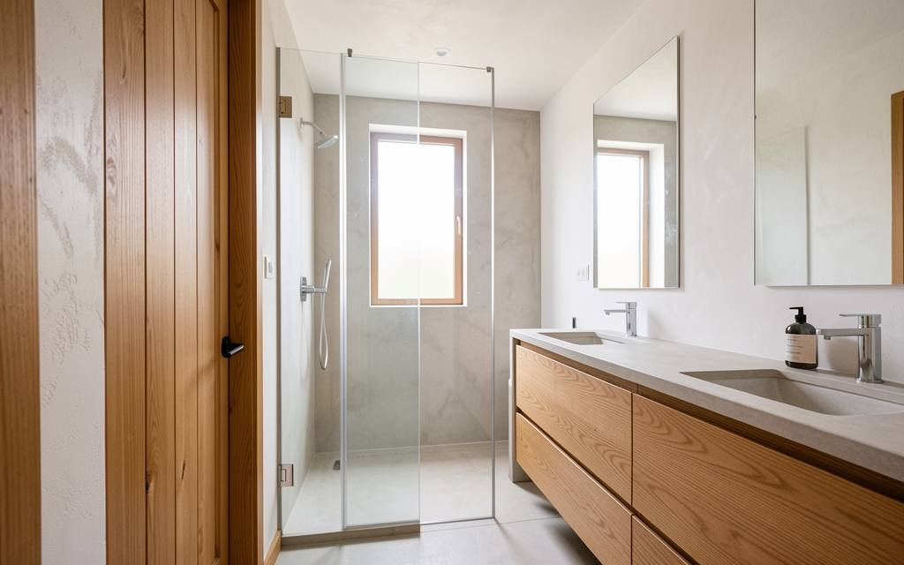

Ducha y desagüe
Plato de ducha a ras de suelo, o bañera si la prefieres. Antes de cerrar el suelo cambiamos los desagües y revisamos la bajante.

Inicio / Baños
Cambiamos lo que se ve y lo que no: instalaciones, alicatado y sanitarios.
Recorre el baño. Todo lo que señalamos va escrito en el presupuesto que firmas.
Plato de ducha a ras de suelo, o bañera si la prefieres. Antes de cerrar el suelo cambiamos los desagües y revisamos la bajante.
De vidrio y a medida, o cortina si lo prefieres. La medimos con el alicatado ya puesto.
Primero impermeabilizamos la zona de la ducha. Después va el azulejo que hayas elegido, en paredes y suelo.
Luz sobre el espejo y enchufes con la toma de tierra revisada. Para la humedad, un extractor o el conducto renovado.
Inodoro, lavabo y grifería nuevos. El mueble del lavabo se hace a la medida del hueco.
Cada partida sale por escrito en el presupuesto. Diseña tu baño en el panel y mira el precio mientras eliges.
Revisamos primero las bajantes y la impermeabilización, no solo lo que se ve al final.
Levantamos el baño entero: alicatado, sanitarios y suelo, no parche sobre parche.
Coordinamos fontanero y alicatador para no tener el baño parado entre oficios.
Probamos el agua y los desagües antes de dar la obra por terminada.


Baño
Cambiamos una bañera que ya no se usaba por un plato de ducha a ras de suelo y revisamos toda la fontanería.
Sí. Retirar el baño antiguo y sacar el escombro está incluido en el presupuesto, no aparece después como extra.
Entre 2 y 4 semanas, según si tocamos solo acabados o también la instalación. Es un plazo orientativo, lo cerramos en el presupuesto.
Si solo cambias acabados y sanitarios, normalmente no. Si mueves la distribución o las bajantes, lo comprobamos y gestionamos lo necesario.
Te lo enseñamos antes de tocar nada y te decimos qué cuesta arreglarlo. No se hace nada que no hayas aprobado.
La misma que el resto de la obra: por escrito, en el contrato.
Presupuesto por partidas, con la fontanería revisada desde el primer día.
O llámanos:
600 000 000